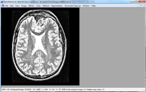

GrayScale DemoDemonstrates Medical Image processing functionalities The GrayScale Demo contains all LEADTOOLS medical image processing function and allow the user to adjust the parameter of each function, plus doing statistics, segmentation, region of interest, window level, etc. |
 |